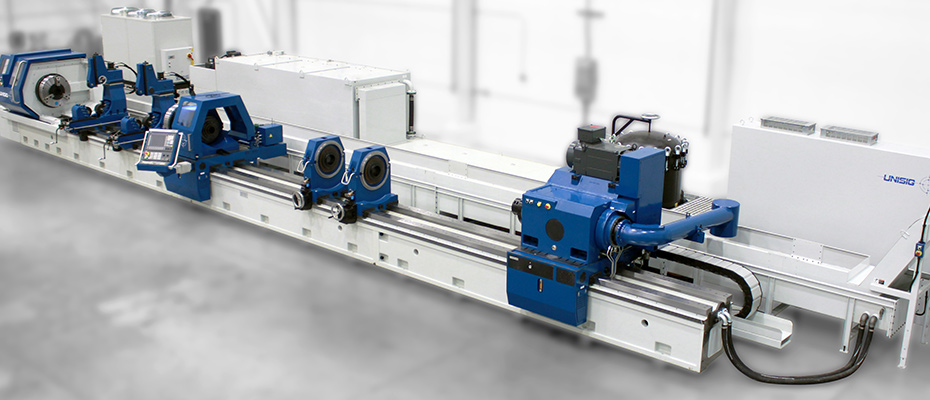

Project Showcase
View our portfolio of projects and machines, highlighting the advanced capabilities of Entrust, and the benefits provided to our customers.
Contact us with your project for an application review.
USC-M50 Drilling and Milling Center
Featured Capabilities:
- Automatic Pallet Changer
- 7-axis CNC
- 50 Tool Changer
- Full Enclosure Guarding
Benefits:
- Reduces changeover time for mold manufacturing by allowing multiple drilling and machining methods with one setup.
USC-TS65 Tube Sheet Drilling Machine
Featured Capabilities:
- Multiple independent spindles
- Traveling column
Benefits:
- Increases production time of heat exchanger tube sheets by 50% without sacrificing accuracy

B1000 BTA Deep Hole Drilling Machine
B1000 BTA Deep Hole Drilling Machine
Featured Capabilities:
- BTA Drilling up to 400mm in diameter
- Swingover bed of 1m
- Drill depth of 4m
Benefits:
- Ability to meet straightness and roundness tolerances in extremely long, heavy workpieces
UNI Drilling Center with Automation
Featured Capabilities:
- Integrated drilling center with 4 spindle BTA drilling
- Additional manufacturing processes include cutting to length and chamfering
- Automatic part loading
- Robotic automation
Benefits:
- Runs 3 shifts while meeting strict tolerances
- Maintains accuracy through a variety of part and drill sizes
UNI Gundrilling Center with Automation
Featured Capabilities:
- Three station gundrilling machine
- Robotic automation
Benefits:
- Automatic drilling of 3 holes in single workpiece, completely automated